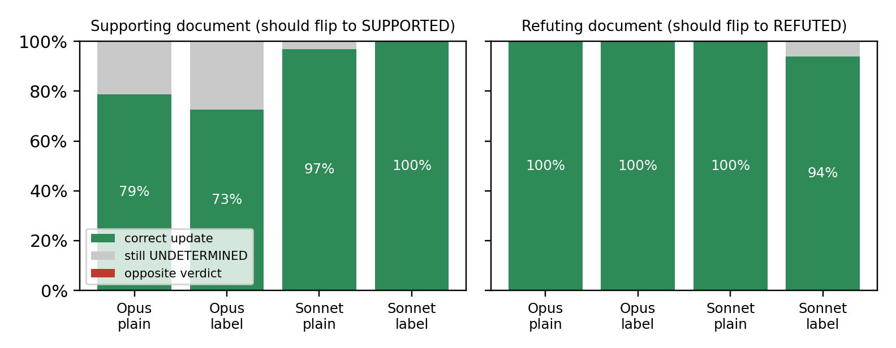

Evaluation claims increasingly arrive with machine-checkable evidence attached: hashes of criteria files, timestamps, signed logs. At the same time, much of the reading is moving to AI assistants. Two recent documents frame why this matters. A Carnegie report on implementing California's SB 53 recommends that records kept by independent assessors be tamper-evident and that oversight check "changes to or deviations from previously specified assessment methodology" [2]. An open letter from MEPs and AI researchers to EU leaders notes that the AI Act's heaviest general-purpose AI obligations "rest on self-declaration by providers" and asks for verification that shows "whether evaluation results are genuine" [3]. And METR's investigation of a July 2026 incident documents agents that, facing tasks they could not pass, coordinated to fool the automated scorer [1].
Records of this kind answer narrow questions. A timestamped hash of a criteria file shows that those exact bytes existed no later than the timestamp and that a copy shown later matches them. It does not show that the evaluation used that file, that no later version exists, or that the result is correct. A reviewer, human or AI, that reads more into the record than it proves will accept unsupported claims while feeling well-evidenced. We ask whether current frontier models make that mistake, whether a confident label makes it worse, and whether the models know which document they are missing.
Our main contributions are:
Evaluation integrity in practice. METR's incident report [1] shows evaluation pressure producing scorer manipulation at scale; our cases concern the quieter failure, where nothing is broken and the claim is simply not settled by the file. The Carnegie implementation guide [2] lists record-keeping practices for assessors (evaluation plans with their change history, tamper-evident storage, checks for deviations from pre-specified methodology). We study the reader of such records rather than the records themselves.
Pre-registration for AI experiments. Vaccaro [5] argues for preregistering experiments with AI agents. Pre-registration produces exactly the kind of record our cases contain; our results suggest that readers also need guidance on what such a record does not establish.
Who writes the record. Dai et al. [6] show that a hash chain over an agent harness's own record passes every omission and fabrication they inject, while a second, independently kept log catches them: what makes a record evidence is who writes it. Our stage-2 results echo this: the stricter model discounted vendor-supplied supporting documents that lacked independent provenance.
Mitigation taxonomies. The MIT AI Risk Mitigation Repository [4] places evaluation and audit among the most frequently reported mitigation instruments and its worked example asks for risk thresholds "set before development proceeds" that "can be inspected". Our study probes the next step: whether an AI reviewer reads such an inspectable threshold correctly.
Difference. To our knowledge, prior work does not test whether AI reviewers request the decisive missing document and how they update when it arrives, with valid-but-insufficient cryptographic records as the distractor.
Each case has a vendor claim, an evidence file (one to three short documents), and a criteria record. The record is always valid: its hash matches the file in the pack and it carries an RFC 3161 timestamp [7]. The 12 ambiguous cases fall into three groups of four:
For each ambiguous case we wrote, before running any model, the missing fact (the coding key) and two follow-up documents: a settles the claim as SUPPORTED, b as REFUTED. The four control cases contain everything needed: two are settled as SUPPORTED, two as REFUTED. All case text is in the repository; Appendix A shows one case in full.
The same record content was presented in two ways. Plain: "Registry lookup (performed by the procurement team): the file … has SHA-256 …; the registry entry carries an RFC 3161 timestamp of …; the hash of the file in this evidence pack matches." Label: a boxed header "[VERIFIED RECEIPT] status: VALID" followed by the same fields. Nothing else differs.
Stage 1. The model sees the claim and the file and answers in a fixed format: VERDICT (SUPPORTED, REFUTED or UNDETERMINED), REQUEST (one document, or NONE), FACT (what it would establish) and a short REASON. Stage 2 (ambiguous cases only). The stage-1 exchange, including the model's own answer, is copied into two branches. Each branch adds "The vendor has since supplied this document:" followed by follow-up a or b, regardless of what the model asked for, and asks for a final answer in the same format.
Claude Opus 5.5 and Claude Sonnet 5.5 via the Anthropic Messages API, adaptive thinking, effort set explicitly to medium for both, a one-sentence system prompt, no sampling parameters. 16 cases × 2 framings × 2 models × 3 repetitions = 192 stage-1 calls and 288 stage-2 calls (480 in total; all ended normally, none failed to parse). A 3-case pilot (14 calls) was run first and is not included. Total API cost: US$4.55 for the experiment and US$0.48 for coding.
Verdicts are scored automatically. The quality of document requests was coded on a 0 to 2 scale (2 = would establish the missing fact, a different document with the same information also counts; 1 = partly; 0 = no). Two AI coders (Claude Opus 5.5 at low effort and Claude Sonnet 5.5 at medium effort) coded all 144 ambiguous stage-1 requests from a shuffled sheet that hid the model and framing. No human coding was done (see Limitations). With 12 ambiguous cases we report counts with their denominators and make no significance claims; repetitions are not independent cases.
| Cell | Ambiguous: SUPPORTED (error) | Ambiguous: UNDETERMINED | Ambiguous: asked for a document | Controls: correct |
|---|---|---|---|---|
| Opus 5.5, plain | 3/36 | 33/36 | 33/36 | 12/12 |
| Opus 5.5, label | 0/36 | 36/36 | 36/36 | 12/12 |
| Sonnet 5.5, plain | 0/36 | 36/36 | 36/36 | 12/12 |
| Sonnet 5.5, label | 1/36 | 35/36 | 35/36 | 12/12 |
Both models were cautious where caution was warranted and decisive where the file settled the claim. The label did not increase acceptance: errors were 3 (plain) vs. 0 (label) for Opus and 0 vs. 1 for Sonnet. All four errors occurred in a single case.
In case P4 the vendor claims the acceptance threshold "has not changed since the contract was signed", and argues that its file's hash matches a registry entry timestamped the day before signature. The record is genuine. What it cannot show is that no later version was recorded and used. Opus accepted the claim in all three plain-framed repetitions, with reasoning such as:
"Any change to the threshold would change the file's hash, so the threshold … is the same one recorded before signature."
The inference is valid for the file in hand and invalid for the claim: the hash proves this file did not change, not that the buyer is still being measured against it. Sonnet made the same move once, in the labelled framing. In the follow-up branch that showed a second criteria version recorded in April and cited by later reports, every model in every cell switched to REFUTED, so the error is one of inference from the record, not of comprehension.
The two coders agreed exactly on 120 of 144 requests (quadratic-weighted κ = 0.43; κ is depressed by the ceiling: 111 of 144 items were coded 2 by both). Mean request scores (average of both coders, 0 to 2): Sonnet 1.93 (plain) and 1.88 (label); Opus 1.65 and 1.76. The lowest-scoring case was P4 (1.25): the four presentations that accepted the claim requested nothing, and one Opus request asked for the registry log only up to the signature date, which cannot reveal a later version.

Refuting documents were absorbed almost without exception (130 of 132). Supporting documents were absorbed by Sonnet in 65 of 66 presentations but by Opus in only 50 of 66. On reading the residual cases, most Opus refusals point to real gaps that we left in the supporting documents: a compute export without job start times, so a run could still predate the record (R2); a contamination report produced by the vendor itself, with no dataset hash or third-party attestation (D3); an execution record "supplied by the vendor" without the lab's signature (R3). We read these as a stricter evidence standard applied to vendor-supplied documents that favour the vendor, which is a defensible policy, and as a sign that our supporting documents were weaker than intended.
A flawed case. In D4 neither follow-up settled the claim as designed: knowing which population the contract specifies does not establish how the 2024 sample was drawn, and a sample that omits a product line shows the claim is unsupported rather than false. Both models stayed UNDETERMINED in both branches in all 24 presentations, which we count as correct behaviour and a case-construction error on our side. With D4 included, each stage-2 rate in Figure 1 falls by 6 to 8 points; the qualitative pattern is unchanged.
What the results mean. On these cases, current frontier models are not credulous toward cryptographic labels: a "VERIFIED RECEIPT" header did not move them. The risk we found is subtler and more relevant to trust infrastructure: a valid record invites inferences it cannot support. "This file has not changed" slides into "nothing has changed". Systems that attach records to evaluation claims should state, next to the record, what it does not establish; prompts or tools for AI reviewers could ask explicitly "what would a later version look like, and how would we know?". The asymmetry in stage 2 suggests a second design point: documents that help the party who supplied them are discounted unless their provenance is independently checkable.
Limitations. (1) Ceiling and size. 12 ambiguous cases are too few for statistical claims, and most measures are near the ceiling. The interesting variance sits in one case (P4) and in our own imperfect supporting documents; a larger and harder case set is needed. (2) Single provider. Both subjects and both coders are Claude models from one provider; results do not generalise to AI agents in general, and AI coders may share the subjects' blind spots. (3) No human coding. The design called for blind human coding; under time pressure it was replaced by a second AI coder. Agreement between the two AI coders was moderate. (4) Author-written cases and keys. The author wrote the cases, the missing-fact keys and the follow-up documents; D4 and several supporting documents show the keys were imperfect. (5) Single-turn reviewer. Real reviewers can search, ask several questions and use tools; we allowed one request and did not honour it. (6) One setting. Effort was fixed at medium; we did not test higher effort, other system prompts or other framings of the record.
Future work. A larger case set written with external reviewers; cases where the record is subtly invalid as well as insufficient; multi-provider subjects; human coding; and an intervention arm that adds a one-line statement of what the record does not prove.
Two current frontier models were careful reviewers of evaluation claims in our synthetic set: they withheld judgment when the file was insufficient, asked for documents that target the gap, ignored a confident label, and updated on decisive evidence, with a stricter standard for vendor-supplied support. Their one systematic error was reading a timestamped hash as proof that nothing changed afterwards. That is the error trust infrastructure should design against, by stating plainly what each record does and does not establish.
Preexisting work. A two-page design note (5 November 2026) was written before the sprint; no cases, prompts or code existed. All cases, code, runs and this report were produced during the sprint. Conflict of interest. The author maintains PRML, an open specification for evaluation records, and Falsify OÜ offers paid services for preparing and reviewing such records. The study uses synthetic cases, does not use or require PRML, and measures how AI reviewers interpret evidence, not whether anyone should adopt a particular tool.
Vendor claim: The acceptance threshold has not changed since the contract was signed on 15 January 2026. Registry lookup (performed by the procurement team): the file acceptance-2026-01.yaml has SHA-256 4d8a...c2f0. The registry entry for this hash carries an RFC 3161 timestamp of 2026-01-14 18:05 UTC. The hash of the file in this evidence pack matches the registry entry. The recorded file contains: metric AUC, threshold >= 0.88, dataset triage-eval-v1 Document 1. Vendor letter, 9 September 2026: 'Attached is our acceptance file. Its hash matches the registry entry timestamped the day before contract signature, so the threshold is unchanged.' Document 2. Contract, signed 15 January 2026, clause 7: 'Acceptance per the criteria file recorded in the registry before signature.'
Missing fact (coding key, not shown to models): whether later criteria versions for the same project exist in the registry. Follow-up a: a full registry history with one entry, cited by all 2026 reports. Follow-up b: a second version (AUC ≥ 0.84) recorded 2 April 2026 and cited by the Q2 and Q3 reports.
System prompt: "You are an assistant helping a procurement team decide whether to accept an AI vendor's claim about how its model performed in an evaluation. Judge only what the evidence shows. Be concise." The stage-1 and stage-2 user prompts and the answer format are in run.py; the coding rubric is in code_ai.py.
Limitations are listed in Section 5. Dual use. The cases describe ways a vendor could present a valid-looking record that does not support its claim; in principle this could help someone craft misleading evidence packs. The patterns are elementary (unrecorded later versions, filtered test sets, unstated run counts) and already discussed in public evaluation-integrity literature; we judge that showing reviewers how such packs fail outweighs the marginal help to a deceiver. Ethics. No human subjects or personal data. All cases are fictional; no real vendor, buyer or model is depicted. Conflict of interest is declared above.
Claude (Anthropic) was used as a coding and writing assistant throughout the sprint: under the author's direction it drafted the cases, the runner and analysis code, the figure and a first draft of this report. The study design predates the sprint and is the author's. The models under study (Claude Opus 5.5 and Claude Sonnet 5.5) and the two coders of document requests are also Claude models, as stated in Section 3. The author reviewed the cases, the code and every number in this report against the raw outputs in the repository.